un peu de texte pour présenter la balade

Facile 🟢
Intermédiaire 🟠
Difficile 🔴
Une journée dans les Ardennes aller/retour à partir du centre de Liège.
On connaît mal la Wallonie et sa nature. Canada-non-Wallonie vous propose de passer une journée dans les Ardennes à partir de Liège. Les transferts se font en car à partir de Liège-Guillemins, aller-retour. À chaque saison, nous vous vous proposons trois expériences qui se différencient par leur niveau de difficulté.
En hiver, nous vous emmenons marcher dans la neige, là où personne ne va.